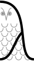

Online Worldwide Seminar on
Logic and Semantics (OWLS)
|
 |
...
Introduction
The Online Worldwide Seminar on Logic and Semantics is a new series of research talks, highlighting the most exciting recent work in the international computer science logic community. The scope of the seminar series is roughly that of the major computer science logic conferences such as LICS, ICALP and FSCD. It takes place every Wednesday at 2pm UTC+1, with a focus every other week on the work of young researchers.
In this time of restricted international travel, a key aim of this series is to provide a forum for the informal discussion and social interaction that is so important for the progress of science. To facilitate this, the seminar incorporates in virtual form a number of features more normally associated with physical meetings:
- Virtual "coffee breaks" before and after the seminar, allowing participants to chat in small groups, replicating the social element of a real-world conference.
- Robust technology platform supporting hundreds of interactive participants.
- Live-stream of the speaker's slides visible alongside the speaker's face, allowing nuanced communication at a human level.
- Chairperson to introduce the speaker, facilitate questions from the audience, and keep proceedings running on time.
- Audience members whose question is selected by the chairperson can deliver it in full audio and video, giving a natural interaction with the speaker.
- No need to register, just show up.
Talks are given by invitation of the organizing committee. Feedback is warmly encouraged; if you have any comments or ideas, feel free to get in touch with an organizer.
Programme
Unless otherwise noted, seminars take place on Wednesdays at 1pm UTC, which is 2pm in the UK due to Daylight Savings Time. An easy way to see the corresponding time in your own time zone is to add the OWLS calendar to your own calendar, with the following links: Google Calendar Apple Calendar
Seminars are 45 minutes long including questions, and will start at the advertised time. As described below, feel free to join early, or stay around after the end of the talk, to participate in the coffee breaks. A link to join the seminar is given in the participant information below. Every other week, the seminar hosts a young researcher to present their work; these seminars are labelled OWLS-YR.
Here is the list of upcoming seminars.
- 26 August 2020 (OWLS). Orna Grumberg, Technion - Israel Institute of Technology , "Automated Program Repair". Chair: Alexandra Silva In the process of software development and maintenance, much efforts are invested in order to
ensure that the product is as bug free as possible. Automating the repair process is highly
desired.
In this talk we present two approaches to automated program repair, based on formal methods.
The first approach automatically repairs an erroneous program
using a predefined set of mutations to the code (e.g., replacing ‘+’ with ‘-‘ ; ‘>’ with ‘<’, etc.).
The repair algorithm goes through generate-validate iterations, which involve fault localization
mechanism in order to disregard sets of unsuccessful repairs.
The approach guarantees soundness and completeness with respect to a bounded notion of
correctness.
The second approach intertwines compositional Assume-Guarantee verification with repair.
Automata learning is used for compositional verification. If an erroneous behavior is found,
abduction assists in repairing the system by inferring new constraints that eliminate erroneous
runs. Then, the verification proceeds for the repaired system.
This is a joint work with: Hadar Frenkel, Corina Pasareanu, Bat-chen Rothenberg and Sarai
Sheinvald.
- 2 September 2020 (OWLS DEBATE), 3pm UTC. Panel: Brendan Fong, MIT; Nicole Immorlica, Microsoft Research; Delia Kesner, IRIF; Benjamin Pierce, University of Pennsylvania; Thomas Schwentick, Technische Universität Dortmund; Moshe Vardi, Rice University. "Evolution or Revolution? The Future of Conferences in Theoretical Computer Science". Chair: Jamie Vicary
The entire community is invited to participate in a debate on the future of the conference system in theoretical computer science. This will provide a rare community-wide opportunity for us to consider the strengths and weaknesses of our current system, and consider if we can do better. Questions will be asked by members of the audience, and answered by our panel members.
The scope of the debate is all aspects of our publishing and community
traditions, characterised by prestige earned mostly through
publication in competitive conferences, and frequent local and
international travel. Possible topics for discussion include the need
to publish in conferences for career progression, which usually
involves burning carbon; wasted reviewing effort when good papers are
rejected from highly competitive conferences; the extent of our
responsibility as a community to respond to climate change;
alternative publishing models, like the journal-focussed system used
in mathematics; high costs of conference travel and registration;
virtual conference advantages, disadvantages and best practice;
improving equality, diversity and access; consequences and response to
COVID-19; and the role of professional bodies. These topics have many
tight relationships, and need to be discussed together to gain a full
understanding of the issues involved.
The following links provide further reading on topics related to the debate:
- 9 September 2020 (OWLS). Filippo Bonchi, Universita di Pisa, "TBA". Chair: Pawel Sobocinski
- 23 September 2020 (OWLS). Anupam Das, University of Birmingham, "TBA". Chair: Jamie Vicary
Here is the list of past seminars in reverse chronological order.
- 12 August 2020 (OWLS). Javier Esparza, Technical University of Munich, "An Efficient Normalisation Procedure for Linear Temporal Logic". Chair: Pawel Sobocinski
In the mid 80s, Lichtenstein, Pnueli, and Zuck proved a normal form for
formulas of LTL with past operators, which Manna and Pnueli then used as the
basis of their famous classification of temporal formulas. Some years later,
Chang, Manna, and Pnueli built on this result to derive a similar normal form for
the future fragment of LTL. Both normalisation procedures had a non-elementary
worst-case blow-up, and followed an involved path from LTL formulas to counter-free
automata to star-free regular expressions and back to LTL.
We improve on both points. We present a purely syntactic normalisation procedure
from LTL to LTL, with single exponential blow-up, that can be implemented in a few
dozen lines of Standard ML code. As an application, we derive a simple algorithm to
translate LTL into deterministic Rabin automata. The algorithm normalises the
formula, translates it into a special very weak alternating automaton, and applies a
simple determinisation procedure, valid only for these special automata.
This is joint work with Salomon Sickert that appeared in LICS 2020
- 5 August 2020 (OWLS-YR). Umang Mathur, University of Illinois at Urbana Champaign, "Verification of Uninterpreted and Partially Interpreted Programs". Chair: Krishna. S
(slides)
Uninterpreted programs are sequential programs with loops and recursion written over a first order vocabulary where the constant, function and predicate symbols used are completely uninterpreted. The input to an uninterpreted program is a first order structure which also determines the semantics of such a programs. The verification question in this setting asks if an uninterpreted a program meets all its assertions on all input structures. In this talk, I will discuss the decidability boundaries for the verification question of uninterpreted programs. In general, the problem is undecidable, but becomes decidable for a sub-class, called coherent uninterpreted programs. The decidability result is tight in that slightly relaxing the coherence criteria leads to undecidability.
I will then discuss how the decidability result of coherent programs segue into more general classes of programs, called k-coherent programs (k is a natural number). Finally, I will discuss extensions to the verification question for partially interpreted programs, where the vocabulary is associated with an underlying first order theory and the inputs are those first order structures which are also models of this underlying theory.
- 29 July 2020 (OWLS). Tarmo Uustalu, Reykjavik University, "Interaction laws of monads and comonads". Chair: Jamie Vicary (slides) We introduce and study functor-functor and monad-comonad interaction laws as mathematical objects to describe interaction of effectful computations with behaviors of effect-performing machines. Monad-comonad interaction laws are monoid objects of the monoidal category of functor-functor interaction laws. We show that, for suitable generalizations of the concepts of dual and Sweedler dual, the greatest functor resp. monad interacting with a given functor or comonad is its dual while the greatest comonad interacting with a given monad is its Sweedler dual. We relate monad-comonad interaction laws to stateful runners. We show that functor-functor interaction laws are Chu spaces over the category of endofunctors taken with the Day convolution monoidal structure. Hasegawa's glueing endows the category of these Chu spaces with a monoidal structure whose monoid objects are monad-comonad interaction laws.
This is joint work with Shin-ya Katsumata (NII, Tokyo) and Exequiel Rivas (Inria, Paris).
- 22 July 2020 (OWLS-YR). Justin Hsu, University of Wisconsin–Madison, "A separation logic for probabilistic independence". Chair: Koko Muroya
(slides)
Probabilistic independence is a useful concept for describing the result of random sampling---a basic operation in all probabilistic languages---and for reasoning about groups of random variables. Nevertheless, existing verification methods handle independence poorly, if at all. We propose a probabilistic separation logic PSL, where separation models probabilistic independence, based on a new, probabilistic model of the logic of bunched implications (BI). The program logic PSL is capable of verifying information-theoretic security of cryptographic constructions for several well-known tasks, including private information retrieval, oblivious transfer, secure multi-party addition, and simple oblivious RAM, while reasoning purely in terms of independence and uniformity. If time permits, we will also discuss ongoing work for reasoning about conditional independence.
- 15 July 2020 (OWLS). Christine Tasson, IRIF, Paris, "Towards a model of mixed linear and non-linear substitution." Chair: Alexandra Silva (video)
A functional program is said to be linear when it uses exactly once its
input. Linearity is useful to handle memory safely, single-use channels
in concurrency, or quantum resources. Yet, we do not want all inputs to
be linear and some of them can be used several times safely. Hence the
need to understand what is a model of linear-non-linear substitution.
Such settings appear naturally in differential lambda-calculus which is
our initial motivation.
We move from the usual categorical axiomatization of linear logic and
lambda-calculus to the multicategorical axiomatisation, using
profunctors and 2 monads to give account to linear and non-linear
contexts. We present how to combine the linear and the non-linear 2
monads in order to model the linear-non-linear substitution.
This is joint work with Martin Hyland.
- 1 July 2020 (OWLS-YR). Amina Doumane, CNRS, ENS de Lyon, "(Non)axiomatizability of positive relation algebras via graph homomorphisms". Chair: Charles Grellois (video)
We study the equational theories of composition and intersection on binary relations, with or without their associated neutral elements (identity and full relation). Without these constants, the equational theory coincides with that of semilattice-ordered semigroups. We show that the equational theory is no longer finitely based when adding one or the other constant—contradicting a conjecture from the litterature. Our proofs exploit a characterisation in terms of graphs and graph homomorphisms, which we show how to adapt in order to capture standard equational theories over the considered signatures.
- 24 June 2020 (OWLS). Valeria Vignudelli, ENS Lyon, "Monads and Quantitative Equational Theories for Nondeterminism and Probability". Chair: Pawel Sobocinski (video) The monad of convex sets of probability distributions is a well-known tool for modelling the combination of nondeterministic and probabilistic computational effects. In this talk I will discuss theories allowing us to reason equationally about this monad, and applications to program verification.
In order to reason about distances between programs combining nondeterminism and probabilities, the monad of convex sets of distributions can be lifted from the category of sets to the category of metric spaces. Using the framework of quantitative algebras, recently introduced by Mardare, Panangaden, and Plotkin, we derive an equational presentation of this monad on metric spaces.
The main results I will present in this talk are based on collaborations with Filippo Bonchi, Matteo Mio, and Ana Sokolova.
- 17 June 2020 (OWLS-YR). Marie Fortin, University of Liverpool, "FO = FO3 for Linear Orders with Monotone Binary Relations" Chair: Nathanaël Fijalkow
(slides)
It is well-known that linear orders have the 3-variable property, meaning that over linear orders, every monadic first-order formula with up to 3 free variables is equivalent to one that uses at most 3 variables in total. Over the years, this has been extended to richer classes of structures, such as real-time signals with the +1 relation, Mazurkiewicz traces, or message sequence charts. In this talk, I will present a unifying proof that generalizes those facts. It is based on star-free PDL, a variant of propositional dynamic logic that captures precisely the 3-variable fragment of first-order logic. More precisely, I will show that over structures consisting of one linear order and arbitrarily many binary relations satisfying some monotonicity conditions, star-free PDL has the same expressive power as full first-order logic. This implies that any class of such structures has the 3-variable property.
- 10 June 2020 (OWLS). Seminar cancelled in support of Black Lives Matter.
- 3 June 2020 (OWLS-YR). Dmitry Chistikov, University of Warwick, "Parikh's theorem from the complexity viewpoint". Chair: Krishna S. (video)
(slides)
Parikh's theorem (1961) connects two basic concepts in computer science,
recursion and iteration. It states that commutative images of context-free
and regular languages form the same family --- namely semilinear sets, or
sets definable in Presburger arithmetic (the first-order logic of addition
and order). This theorem has become a standard tool in the theory of
verification, with many different proofs and extensions.
In this talk, we will recall Parikh's theorem and look at it from the
complexity viewpoint. Transformation from pushdown automata into finite
automata incurs a description blowup, but how big does it need to be?
We will look at context-free languages in general and at their subclass,
one-counter languages, focusing in particular on lower bounds (hardness).
- 27 May 2020 (OWLS). Dexter Kozen, Cornell University, "Brzozowski derivatives as distributive laws". Chair: Alexandra Silva (slides) (video)
- 13 May 2020 (OWLS). Bartek Klin, Warsaw University, "Monadic monadic second order logic". Chair: Jamie Vicary (slides) (video) Monadic second order logic (MSO) is usually studied over specific kinds of structures, be it finite words, infinite words, finite or infinite trees, total orders of various shapes, etc. A monad is a notion of "a kind of structures" that covers these and many other examples. One can formulate an abstract definition of MSO for a generic monad. I will explain how this is done, and I will describe some conditions that a monad should satisfy to ensure a basic "sanity check": that every definable language is recognized by a finite algebra. (joint work with Mikołaj Bojańczyk and Julian Salamanca)
- 29 April 2020 (OWLS). Daniela Petrisan, University of Paris, "Combining probabilistic and non-deterministic choice via weak distributive laws" (video). Chair: Pawel Sobocinski
- 15 April 2020 (OWLS). Joost-Pieter Katoen, RWTH Aachen University, "Termination of probabilistic programs". Chair: Alexandra Silva (slides) (video)
Program termination is a key question in program verification. This talk considers the termination of probabilistic programs, programs that can describe randomised algorithms and more recently received attention in machine learning. Probabilistic termination has several nuances and has some unexpected effects. Programs may diverge with zero probability; they almost-surely terminate (AST). Two AST-programs run in sequence may have an infinite expected run-time, though each of its constituents has a finite expected run-time.
This talk will demystify the notions of probabilistic termination, its surprising effects, and its hardness ("degree of undecidability"). We will show a simple proof rule for deciding AST.
- 1 April 2020 (OWLS). Kevin Buzzard, Imperial College London, "Is HoTT the way to do mathematics?". Chair: Jamie Vicary (slides) (video)
Homotopy type theory (HoTT) is a foundation for mathematics. Its origins are in work of Awodey, Warren and independently Voevodsky, an algebraic geometer who then changed area and proposed a new definition of equality between mathematical objects. Voevodsky was initially motivated by a desire to formally verify his own work on a computer. However after his unfortunate death in 2017 it was still not the case that any serious algebraic geometry recognisable to a classical algebraic geometer had been formalised in a HoTT computer system. Even in 2020 Grothendieck's original definition of a scheme (the fundamental building block of modern algebraic geometry) has only been formalised in Lean's Dependent Type Theory (DTT), and not in any HoTT system.
In my talk, I will start by explaining Voevodsky's univalence axiom, the problems it solves and the problems it causes. I will then explain a basic mathematical question for which Voevodsky's axiom seems in theory like it might be helpful. I will finally talk about work of Ramon Fernandez Mir on formalising Grothendieck's original definition of a scheme in Lean's DTT system (without Voevodsky's axiom). Whether or not this can be done in a HoTT system is apparently an open problem, but one which is easily attackable, and I will finish by explaining my plan for attacking it.
Information for participants
Joining the seminar. To join any OWLS seminar, visit the following link, up to 15 minutes before the posted start time:
You will be given the option to join through your web browser, or to launch the Zoom client if it is installed on your device (see below). For the best experience, we recommend using the client. When prompted for your name, please enter your real name, so that social interactions during the seminar and coffee breaks can be more natural.
Audio and video. We encourage all participants to enable their audio and video at all times (click "Use Device Audio" in the Zoom interface.) Don't worry about making noise and disrupting the proceedings accidentally; the Chairperson will ensure your audio is muted by default during the seminar. Having your audio and video enabled will allow other participants to see your face in the "Gallery" view, letting them know that you're taking part. It also gives you the option of asking a question, and of making best use of the "coffee break" sessions. For most users with good network access (such as a fast home broadband connection), there is no need to worry that having your audio and video enabled will degrade the experience; the technology platform ensures that the speaker's audio/video stream is prioritised at all times. However, those on slow connections may find it better to disable their audio and video.
Coffee breaks. Every OWLS seminar has two "coffee breaks", one starting 15 minutes before the posted start time of the seminar, and the second starting after the seminar is finished. To participate in these, feel free to join the meeting early, or to keep the meeting window open after the end of the talk. During these coffee break periods, participants will be automatically gathered into small groups, assigned at random; please introduce yourself to the other members of your group, and chat just like you would at a real conference. Remember to bring your own coffee! If you're not interested in chatting, please close the meeting window during the coffee break periods, so that people who want to chat are not grouped with those who do not.
During the seminar. If you'd like to ask a question, either during the seminar or in the question period at the end, click the "Participants" menu and select "Raise hand". The Chairperson may choose to interrupt the speaker and give your audio/video feed the focus, giving you the opportunity to ask your question verbally, or may instead decide to let the seminar continue. You may click "Lower hand" at any time to show you no longer wish to ask a question. To preserve the experience of a real face-to-face conference, there is no possibility of giving a written question, and the chat room is disabled. You also have the opportunity to give nonverbal feedback to the speaker by clicking the "speed up" or "slow down" buttons, also in the "Participants" menu.
Recordings. Most OWLS seminars will be recorded and uploaded to YouTube after the event. Only the audio/video of the chairperson, speaker, and questioners will be captured. If you prefer not to be recorded, do not ask a question. Of course, the organizers do not make any recordings of the coffee break sessions.
Inappropriate behaviour. The organizers make use of a range of security features to ensure that the seminar cannot be disrupted by participants who are not interested in constructive scientific interaction. During a seminar, if you observe ongoing inappropriate behaviour, please send a private message to the chairperson to point it out.
Technology platform
Seminars are hosted through the video conferencing system Zoom. Native clients are available to download for a wide range of platforms, including mobile devices:
For those who prefer not to use a client, a browser interface is also available.
Mailing list
The OWLS mailing list sends reminders before each seminar, and announces upcoming seminars. To sign up, visit this link:
Organizing committees
If you have any feedback about OWLS, feel free to get in touch with an organizer.
OWLS
OWLS-YR
- Nathanaël Fijalkow, CNRS, Laboratoire Bordelais de Recherche en Informatique, France
- Charles Grellois, Université Aix-Marseille, France
- S. Krishna, IIT Bombay, India
- Koko Muroya, RIMS, Kyoto University, Japan